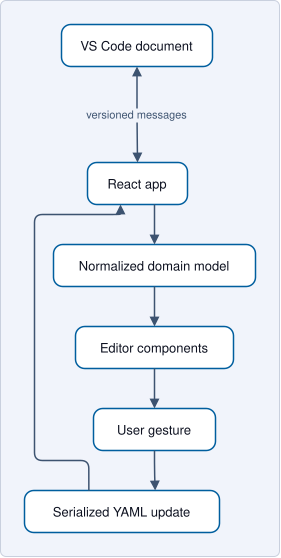
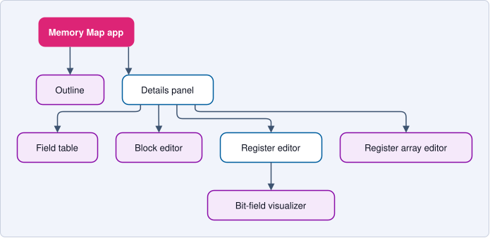

Webview Architecture¶
IPCraft has two React applications running in VS Code webviews. A webview is an embedded browser: it can render the editor interface, but it cannot read project files or start external tools directly.
| Editor | Entry point | Root element |
|---|---|---|
| Memory Map | src/webview/index.tsx |
#root |
| IP Core | src/webview/ipcore/IpCoreApp.tsx |
#ipcore-root |
A third, read-only bundle, src/webview/systemDiagram/index.tsx, renders system
designs (#system-diagram-root). It is described in
System diagram application.
Shared boundary¶

Both applications use src/domain/parse.ts to convert document data into the
editor model and src/domain/serialize.ts to remove editor-only values before
writing YAML.
rowId identifies a React row across renders. It is never document data.
Memory Map application¶
The Memory Map app has three main regions:
Outlineselects blocks, registers, arrays, and fields;DetailsPanelchooses the editor for the selected item;- visualizers show bit and address layouts.
The table editors for blocks, registers, and fields share
useTableEditorState. It combines keyboard navigation, draft protection, and
the pointer insert bar.

Layout calculations belong in pure functions under
src/webview/algorithms/. Components request an operation and render the
result; they should not contain separate address or bit-position formulas.
IP Core application¶
The IP Core app uses a block-diagram canvas:
LibraryPalettesupplies items to add;IpBlockCanvasdraws ports, parameters, clocks, resets, and interfaces;CanvasInspectoredits the current selection;StagingOverlayreviews generated files before they are accepted.
useIpCoreState owns parsed data and validation. useIpCoreBridge is the single
typed message boundary: it sends serialized edits and applies the shared
revision filter to incoming document updates. Canvas hooks handle drop,
selection, undo, and keyboard actions.
Host conformance reports are sent as separate conformanceResult
notifications tied to the exact source text they validate. They never bypass
the document update filter, and the Issues session ignores a report whose
source revision no longer matches the current YAML.
Generation is asynchronous, so generateResult carries the source revision
captured when generation started. The Issues session discards a mismatched
result before changing the report, opening the Issues panel, or focusing a
canvas element. This correlation is separate from document-update revision
filtering: a generation result is an operation response, not a document update.
Bus contract package boundary¶
src/shared/busContracts/index.ts is the public API used by generators,
parsers, services, and the webview. Its exported modules cover canonicalization,
normalization, resolution, validation, data-lane semantics, and vendor metadata
import. Lower-level expression, constraint, fixpoint, alias, and active-port
modules are implementation details; keeping them behind the barrel prevents
consumers from coupling to intermediate resolver state.
IP Core dependency and ownership boundaries¶
Keep the IP Core import direction one-way:
types and pure canvas utilities
-> editor/message controllers and interaction hooks
-> feature components
-> IpBlockCanvas and IpCoreApp composition roots
IpCoreApp owns top-level composition and lifecycle. It must delegate document
edits, revision-aware messaging, selection commands, session state, and overlay
routing to typed boundaries rather than accumulating raw listeners, YAML path
calculations, or feature state machines.
IpBlockCanvas owns canvas composition and rendering coordination. Geometry,
selection transitions, drag and keyboard lifecycles, and model-changing commands
belong in focused pure utilities, hooks, or controllers. Renderer callbacks
request typed actions; they do not independently recreate mutations or
cross-process messages.
Hooks may depend on neutral types and pure utilities, but not on React
components. Move shared types or constants to a dependency-neutral module
instead of importing them from a component. Cross-process messages must pass
through the typed message boundary; do not add isolated postMessage calls or
parallel message listeners inside feature components.
Canvas inspector ownership¶
CanvasInspector.tsx owns only the resizable shell, header, footer, and feature
router composition. Selection-specific panels, reusable inspector controls,
message builders, and domain transformations live under
components/canvas/inspector/. Panels receive explicit typed props rather than
reading shared mutable module state.
Keep one inspector feature per production module. Aim for no more than roughly 400 lines; 500 lines is the review trigger for extracting controls, transformations, or a cohesive subfeature. A larger module should retain one clear responsibility and document why splitting it would make ownership less clear.
Apply the same size review to other production modules. Line count is evidence to inspect ownership, not a reason to split cohesive logic into arbitrary fragments. Generated files, declarative data, and templates are excluded.
System diagram application¶
The systemDiagram bundle is read-only. It receives a SystemGraph from the
host (graph, notRecognized, or error messages) and sends only ready,
revealSource, openDefinition, the export and highlight messages, and
startCompare, stopCompare and swapCompare.
While a comparison is on, the graph message also carries compare
({ baseLabel, currentLabel, canSwap, diff }, DiagramCompare in
shared/messages/systemDiagram.ts; canSwap is true when the base is a file).
The host owns the comparison; the webview only lists it. swapCompare asks the host
to open the base file as a diagram and compare it with this document; the webview
reaches it as onSwapCompare (useSystemDiagramMessages to BottomPanel). On the
host, providers/systemDiagram/DiagramPanels.ts finds the panel of a document and
holds a swap request until the new panel registers; PanelCompare.ts is the
comparison of one panel (base, base file, start, stop, swap).
CompareControl.tsxis the toolbar control.ChangesTable.tsxis the Changes tab, with one sticky bar (Base … → Current …bycompareLabels.ts, Swap, the summary and the chips). It renders an address row asspace → segmentitself;ChangeRowand the Markdown report keep the one shared layout. Its rows arechangeRowsof the diff, with structured cells (CellPart, plain or code).changeTargets.tsresolves an address segment row to its slave block in the current graph.changeSummary.tsandpanelFilter.tshold the texts.hooks/useBottomTab.tsdecides when the tab opens and when it falls back.- The marks on the diagram (issue #302) follow the clock decoration pattern.
changeMarks.tsis the pure model of a diff and the current graph: per block its status, title, marked pins and count of changes inside, per external port its status, per level the number of removed blocks and ports, andisNewWire, which decides from thegainedpeers of the diff whether a drawn wire is new (the labels come frompeerLabelof the diff engine, so there is one spelling).changeDecor.tscomputes from the layout and that model, once per layout and comparison, theNodeChangeof each node, the ids of the new wires and the legend entries.useCanvasElements.tsmerges them into the node data (change) and the edge data (changeNew); the per-node objects come from one memo, so a selection keeps them anduseStableElementskeeps the elements.NodeHeaderdraws the badges (ChangeBadges.tsx), the pins carrydata-changeand a title, andElkEdgethe new-wire stroke. The colors are the--sd-change-*custom properties at the top ofsystemDiagram.css, which the Changes tab uses too.hooks/useCompareView.tsowns the Marks toggle (on again when the base changes) and Changes only, which callsuseIsolation'sisolatewithmarkedNodeIds;InstanceChanges.tsxis the Changes section of the Details (cells fromChangeCell.tsx, shared with the Changes tab). With Marks off the canvas gets nochangescontext and every one of these paths adds nothing.
| Layer | Owner |
|---|---|
| Composition root | SystemDiagramApp.tsx, DiagramWorkbench.tsx, WorkbenchLayout.tsx wire the toolbar, outline, canvas, details, and bottom panels |
| Pure layout and geometry | layout/ (elkjs graph construction, placementEdges.ts for which nets place the blocks, clockResetWires.ts, wireRoutes.ts and wireTree.ts (the tree of one net) for the clock and reset wires, node sizing, net badges, bounds, viewport policy, hover placement, panel sizes; expandedLayout.ts for hierarchy blocks expanded in place) and expansion.ts (which levels, nodes, and selections an expansion shows) |
| Clock and reset analysis | clocks/, pure and computed once per graph by analyzeClocks: clockTypes.ts (the result types), frequency.ts (parse and format), unionFind.ts and levelPaths.ts (small shared helpers), physicalNets.ts (nets joined across hierarchy pins, and the driver of each), clockRules.ts (declarative clock output, frequency, forwarding, generator, and reset rules; which Vivado IP pins are outputs is the shared src/domain/knownIpPins.ts, which the Vivado reader also uses to give those pins the direction out with source rule), clockDomains.ts, relatedClocks.ts (clocks of one generator), pinClocks.ts, resetSources.ts, crossings.ts, and the helpers each surface reads: crossingSummary.ts (counts and toolbar text), crossingEdges.ts, domainView.ts, treeSelection.ts, edgeView.ts, nodeView.ts (wire styles, pin marks, node strips), netTree.ts and treeChecks.ts (the tree rows and checks of Details), instanceClocks.ts, crossingRows.ts (the texts of its crossing rows), viewScope.ts (which domains, resets and crossings the Clocks and Resets tabs list for the level and expanded blocks on screen). clockDecor.ts merges them into one description of what the canvas adds to a layout |
| Hooks | hooks/ (host messages, ELK layout, per-level viewport, navigation with the expanded blocks, pin hover, panel resize; useSearchHistory.ts for the search box history, whose pure rules are in searchHistory.ts beside search.ts; searchMatcher.ts compiles the query and its options into the one matcher that the canvas dimming, minimap, counter, stepping and the outline result list share, and that the bottom panel's filter box reuses with the row texts of panelFilter.ts) |
| Components | the node, edge, panel, and table components in src/webview/systemDiagram/; FrameNode.tsx draws a hierarchy block expanded in place; ClocksTable.tsx and ResetsTable.tsx are the Clocks and Resets tabs, both listing crossings through CrossingsTable.tsx, ClockTreeDetails.tsx the clock and reset tree in Details, InstanceClockDetails.tsx the clocks of a block or port, AutoDetail.tsx and DiagramMinimap.tsx children of the React Flow canvas (the first sets the far-zoom detail, thresholds in layout/zoomDetail.ts; the second is the optional minimap, colored by minimap.ts), and DiagramToolbar.tsx groups its icon buttons with the shared ToolbarGroup and ToolbarSeparator (src/webview/shared/components/Toolbar.tsx) |
messageState.ts keeps the last valid graph when a later message reports an
error or says the file is no longer recognized, so the workbench and the
user's view stay mounted. Layout and viewport decisions are pure functions that
are tested without React.
A view's ELK layout depends on its level, its expanded blocks, and its
isolation, and on no toggle. Its edges are the data and interface nets of the
level, plus the clock and reset edges into a block that has no data edge, so
that block stays next to its driver, and the first clock or reset edge of a
driver that would otherwise have none, which only orders a clock or reset input
port vertically next to one of its loads (placementEdges.ts). The boundary pins
of the shown level form two columns by ELK layer constraints
(layout/boundaryColumns.ts, used by boundaryNode): an input gets
FIRST_SEPARATE and elk.alignment: LEFT, every other port (output, inout,
unknown direction) gets LAST_SEPARATE and RIGHT, so the inputs share a left
edge left of every block and the other ports share a right edge right of every
block. ELK rejects a LAST_SEPARATE node with an outgoing edge to another
LAST_SEPARATE node, so a right-column port that drives another right-column
port (a net with no source endpoint) gets LAST instead, which ELK accepts
before a LAST_SEPARATE target; it is placed in the last layer, which blocks can
share. In a chain of such ports, where LAST to LAST would throw, the port
that drives another driver stays unconstrained. The pins of clock and reset nets
reserve a badge label, the net-name label at the end of their wire. ELK routes no
clock or reset wire: after the layout toFlowElements
calls clockResetWires (layout/clockResetWires.ts), which finds the terminals
at the outer ends of the badges and routes one orthogonal tree per net and
level with layout/wireRoutes.ts (pure geometry: block columns, channels, gaps,
lanes), around the blocks. Lanes and crossings keep clear of the data wires;
taps cross them. An expanded block's frame reserves room between its pin
labels and its inner blocks (frameWireChannels in layout/expandedLayout.ts:
a lane per inner clock or reset net ending on that side, at least
FRAME_WIRE_CHANNEL), so the inner level has a channel for its trunks. They are ordinary flow
edges (with a junction dot where a branch leaves the tree), listed before the
data wires, so the viewer, the image export, and ipcraft render draw the same
wires. A wire that branches off the tree also carries lead (the tree path from
the driver to its first point), which the viewer draws with it: React Flow culls
every edge by its own two nodes, so a trunk piece owned by an off-screen wire
would otherwise vanish under the junction dots of wires that are on screen. The
clock and reset wires are never dimmed. See Clock and reset wires. The Clocks and resets toggle
only turns on the domain decorations of the clock context (which the
unconnected-pin review pauses). Toggling therefore never runs ELK again, never
moves a block, and never changes the viewport. isolationSubset picks its
blocks the same way in every mode: the blocks within N data hops of the
selected ones (hopDistances, a BFS over data and interface edges; N is 1 on
every new isolation and is set from the toolbar stepper), with the edges of any
category between two kept blocks at least one of which is closer than N, or
all of them once N reaches the furthest hop (of which the layout draws the
data wires and keeps the clock and reset edges that placementEdges selects).
At N = 1 these are the selected blocks and the other end of each data wire.
Auto detail is not a layout input. AutoDetail.tsx (inside <ReactFlow>)
sets data-far on the canvas container from a boolean store selector, so it
re-renders only when the zoom crosses FAR_ZOOM (layout/zoomDetail.ts), and
keeps --sd-name-scale in step through an imperative store subscription;
systemDiagram.css hides pin text and scales block names under
[data-far='true']. The scale is written only while far and in steps of
NAME_SCALE_STEP (farNameScale), because changing an inherited custom
property restyles every descendant of the canvas. The minimap is not a layout
input either: DiagramMinimap.tsx only draws the nodes the canvas already
holds, so toggling it never moves a block or changes the viewport.
Stable elements: hooks/useCanvasElements.ts (the node and edge building of
DiagramCanvas.tsx) hands React Flow the previous node and edge object for
every element that draws the same thing (reuseUnchanged in
stableElements.ts, applied by hooks/useStableElements.ts), because React
Flow skips an element whose object it already holds. A search keystroke or a
selection therefore re-renders only the elements that changed. This holds only
while everything put into a node's or edge's data is referentially stable
for the elements it does not concern: callbacks are stable (onSelectNet
reads the latest handlers from a ref), and per-node values (selectedNetIds,
review, domains, pinMarks, highlightedPins) are computed in their own
memos and set only on the nodes they apply to.
Dimming is not data: a dimmed block gets the node className sd-dimmed (the
class of the React Flow wrapper, styled in systemDiagram.css), and
reuseUnchanged keeps the previous data object when only the element around
it changed. InstanceNode, FrameNode and BoundaryNode are React.memo, so
such a block does not render its pins again.
<ReactFlow> sets onlyRenderVisibleElements, so blocks and wires off screen
are not mounted. That only holds if every node carries measured (its layout
size) and handles (the source and target handle of each pin, from
layout/nodeHandles.ts), both set in toFlowElements. Without measured
React Flow forgets the handle bounds of a node whose object changed and mounts
the node again even off screen. With measured alone it would never read the
handles again, so a renamed pin would keep its old handle id and lose its
wire. Explicit handles make React Flow build the handle bounds from the
layout every time, so an unmounted or unresized node never needs DOM
measurement and its handle ids always come from the layout (React Flow may
still re-measure a mounted node, which is harmless because the ids match);
they must equal the <Handle>s the node components render
(nodeHandles.test.tsx compares them). npm run perf:system-viewer measures
these paths, including the mounted node count while zoomed in.
Updates and drafts¶
Text cells keep an unfinished draft separately from the last valid document value. This allows users to type partial ranges or numbers without immediately creating invalid YAML.
When a valid edit is committed:
- the component requests an update;
- the domain model is serialized;
- the webview sends an edit ID and starting document version;
- the extension host applies or rejects the update;
- the webview accepts the resulting document version.
See Data flow for the message rules and bit field handling for structural field edits.
Shared components¶
Reusable form and table controls are under src/webview/shared/components/.
Shared validation, formatting, focus, and YAML-key helpers are under
src/webview/shared/utils/.
Use VS Code theme variables for colors and keep form behavior consistent across both applications.
Security¶
The extension host provides a content security policy that limits scripts, styles, fonts, and resources to approved extension locations. Webviews send typed messages for file access and commands. Do not add direct Node.js or file system assumptions to webview code.
Contributor checklist¶
When changing a webview feature:
- identify the owning layer and keep imports flowing toward the composition root;
- extract a focused seam when a change would add another responsibility to a root or renderer;
- keep dependencies explicit and avoid hidden module state or broad contexts;
- use one tested implementation for behavior shared by multiple surfaces;
- update both sides of a changed message;
- keep editor-only fields out of serialized YAML;
- use the shared table pattern in all parallel editors;
- put layout calculations in pure algorithm modules;
- preserve one gesture's update and undo boundary during refactors;
- test focus and keyboard behavior in a browser;
- verify narrow and wide editor widths;
- verify light, dark, and high-contrast themes.